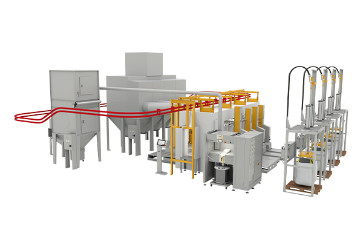

Hệ thống buồng cho bột Enamel cho 1 màu
Buồng Phun MRS là 1 mô hình đa năng cho tất cả công trình sơn 1 màu bột enamel. Sự linh hoạt và chống hao mòn của buồng phun được thiết kế để cho ra sản phẩm với hiệu suất và chất lượng tốt nhất với loại bột enamel.

Hệ thống buồng cho bột Enamel với tính năng đổi màu đổi màu
Công nghệ buồng EquiFlow BA04-E is thiết kế đặc biệt cho công trình cần thiết việc đổi màu. Với việc dùng các thành phần với tính chất cách điện kết hợp với công nghệ EquiFlow và bộ điều khiển bột trung tâm đảm bảo buồng được dọn sạch sẽ trong thời gian ngắn nhất để cải thiện chất lượng màng sơn.